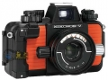

器材库 > 旁轴胶片相机 > Nikonos V

规格总览
产品类型
可换镜头旁轴胶片相机
发布日期
1984
曝光控制
测光模式
中央重点测光
ISO感光度
25-1600
快门
快门速度
16 - 1/1000秒, B
外观
颜色
橙/黑色, 绿/黑色
音盲2006-04-26 20:054.75 分
操作性 5.00功能性 4.00美观性 5.00趣味性 5.00耐用性 5.00性价比 4.50
不烧2002-08-22 22:184.25 分
操作性 4.00功能性 3.50美观性 4.50趣味性 5.00耐用性 5.00性价比 3.50
产品图 / 样片
尼康 Nikonos V